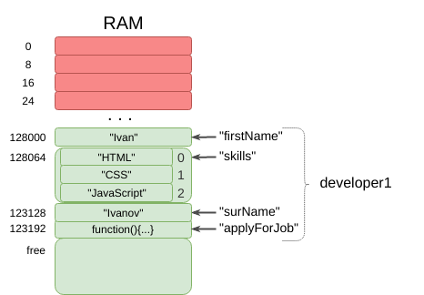

JavaScript Обекти
Създаден за
Iva E. Popova, 2015-2017,

Въведение
Object = {properties + methods}
- Обект: структура от данни, която обединява в едно цяло данните и действията (функциите), които могат да се извършват върху тях.
- Данните в един обект се наричат свойства (properties), а функциите – методи (methods).
- Всяко едно свойство на обект съдържа данни - може да бъде всеки един тип данни, но за разлика от масива, данните тук се асоциират с имена (property names, keys) а не с цифрови индекси.
- Когато в дадено свойство имаме функция, тогава това свойство се нарича метод на обекта
Пример за обект:
var developer1 = {
// properties:
"firstName" : "Ivan",
"surName" : "Ivanov",
"skills" : ["HTML", "CSS", "JavaScript"],
// methods:
"applyForJob" : function(){
console.log( this.firstName + " is applying for job!")
}
}
- Редът на създаване на свойствата няма никакво значение, тъй като данните в обектите не са подредени!
Ето как, съвсем обобщено, изглежда един обект в паметта:
{kind=link}
Създаване на единичен обект
Чрез литерал - предпочитания вариант
// създаване празен обект:
var obj = {};
// създаване на обект с 4 свойства:
var car1 = {
"brand" : "ford",
"year" : 2016,
"color" : "red",
"doors" : 3
}
Забележете, че след последния елемент на обекта не се слага запетайка!
Чрез глобалния обект Object
var obj = new Object();
Този начин за създаване на обект, вече не се използва!
Внимавайте да не объркате този вариант с използването на конструктор на обекти, който ще бъде разгледан по-нататък:
var obj = new Car();
Достъп до свойствата на обект
Чрез точка (Dot Notation)
object_name.property_name
Ако използваме обекта developer1, създаден по-горе, то за да достъпим неговите свойства:
console.log( developer1.firstName ); //Ivan
console.log( developer1.surName ); //Ivanov
console.log( developer1.skills );
// ["HTML", "CSS", "JavaScript"]
console.log( developer1.skills[0] ); //"HTML"
console.log( developer1.applyForJob() );
// Ivan is applying for job!
developer1.firstName = "Stoyan";
// промяна на свойството "firstName"
Чрез квадратни скоби (Square-bracket Notation)
object_name[variable_holding_property_name]
Отново ще използваме обекта developer1
// променлива, в която съхраняваме име на свойство:
var propName = "firstName";
console.log( developer1[propName] ); // Ivan
developer1[propName] = "Marin"; // променяме свойството "propName"
Задачи за упражнение
Task1: developer2 object
These slides are based on
customised version of
framework